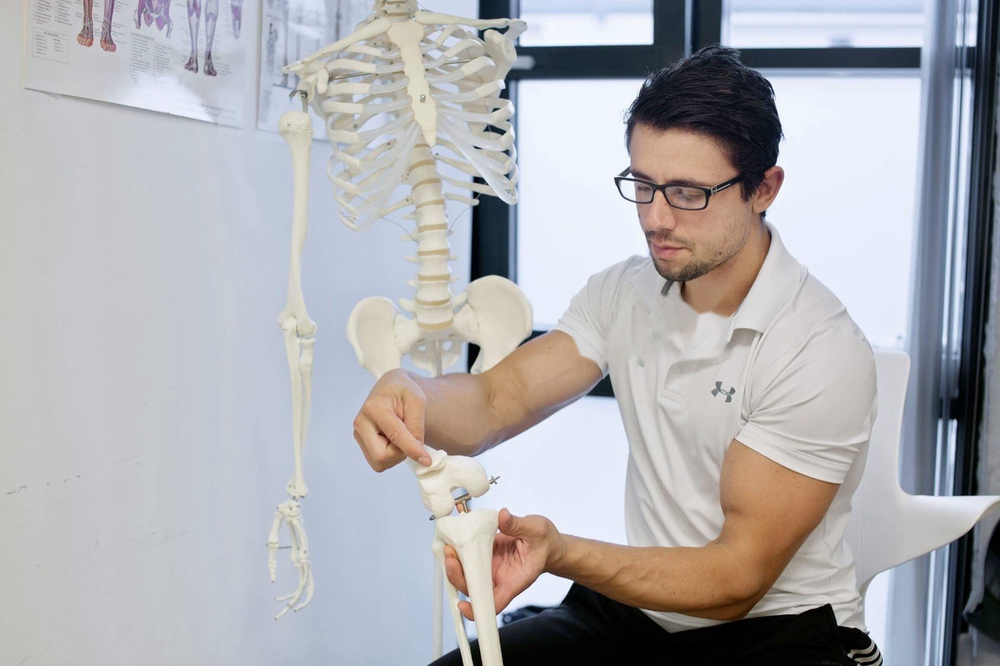
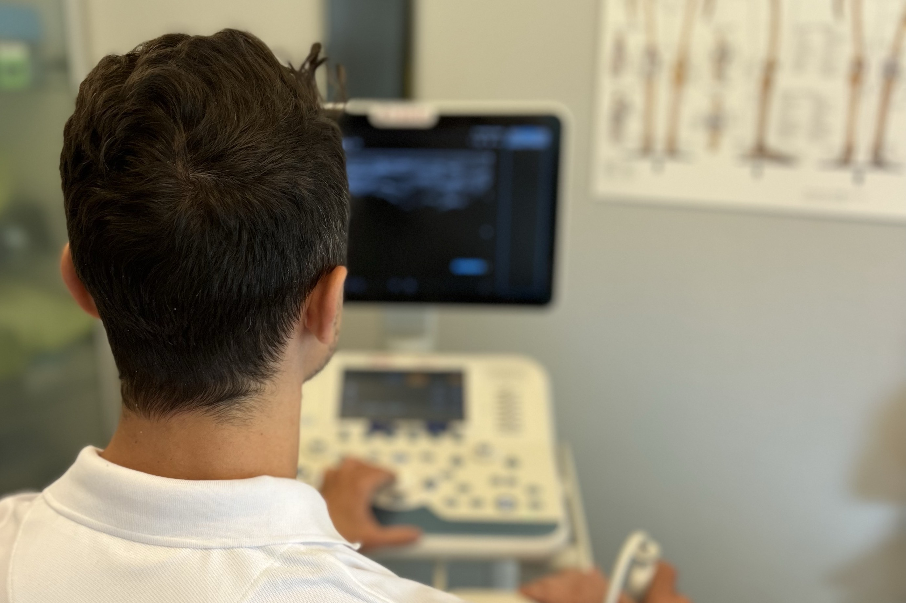
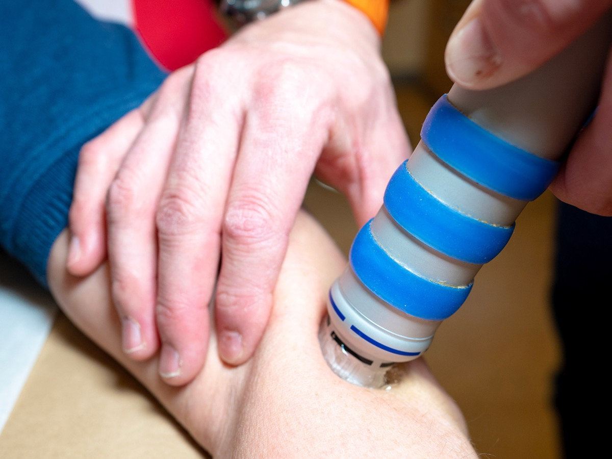
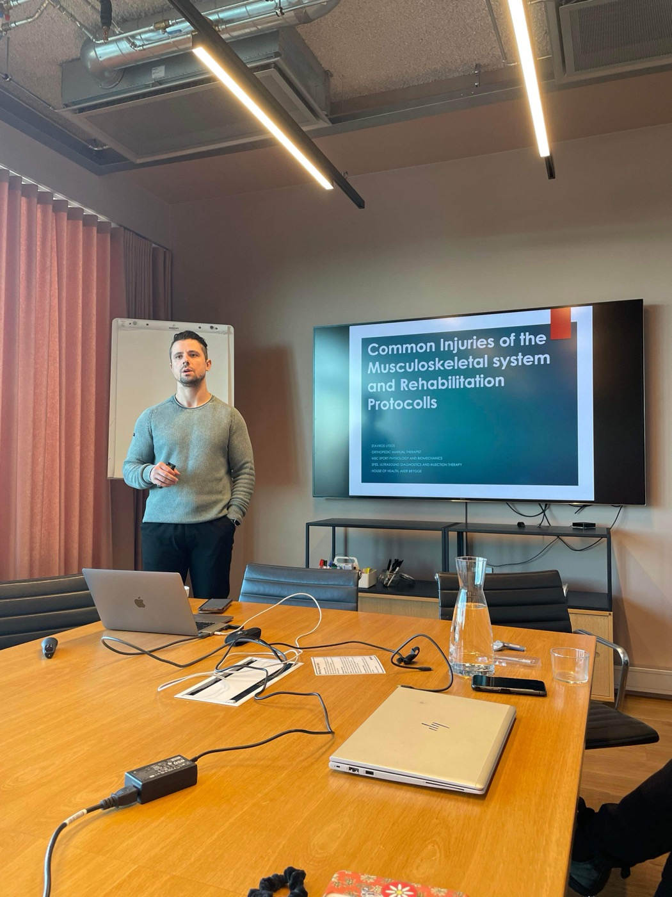

FAGANSVARLIG MANUELLTERAPEUT
hos House of Health
- Spes. klinisk ortopedisk medisin (OMI)
- Spes. ultralyddiagnostikk og injeksjonsbehandling
- Klinikk i Oslo og Nesbru
Hvem er Stavros Litsos?
Fagansvarlig manuellterapeut med spesialkompetanse i klinisk ortopedisk medisin og ultralyddiagnostikk.
Stavros er utdannet manuellterapeut fra Universitetet i Bergen og har en mastergrad i idrettsfysiologi og biomekanikk fra Norges idrettshøgskole. I tillegg har han spesialistkompetanse i klinisk ortopedisk medisin (OMI Cyriax) og videreutdanning i ultralyddiagnostikk og injeksjonsbehandling fra Norge og England.
Han besitter lang erfaring innen eliteidrett og idrettsmedisin med fokus på rask rehabilitering og klargjøring av utøvere etter skader, og følger opp en rekke lag og utøvere på landslagsnivå. I tillegg er han veileder for masterstudenter i klinisk manuellterapi ved UiB.
Les mer ➔Faglig informasjon

McKenzie-protokollen for rygg- og nakkeplager
Les mer →
Common injuries of the musculoskeletal system and rehabilitation protocols
Les mer →«Stavros er et funn. Ekstremt kunnskapsrik, tålmodig og dyktig. Jeg har fått hjelp med dårlige knær og med belastningsskader i skuldre og hender. Jeg har også sendt både familie og venner til ham – alle har vært like fornøyde.»
Legelisten
«Utrolig flink på alle måter. Brukte ultralyd for å finne ut av skaden og ga meg en målrettet plan på 3 måneder. Ble bra raskt og har ikke trengt å gå tilbake. Anbefales på det sterkeste.»
Legelisten
«Etter en alvorlig skulderskade og lang rehabilitering har jeg vært så heldig å få oppfølging av Stavros. Han har vært helt avgjørende for fremgangen min. Jeg gir mine aller sterkeste anbefalinger.»
Legelisten
«Jeg er svært fornøyd med behandlingen hos Stavros. Han viste god faglig kompetanse, var lyttende og ga tydelige og nyttige råd. Jeg opplevde rask bedring og følte meg trygg og ivaretatt hele tiden.»
Legelisten
«Forklarer veldig tydelig hva og hvordan, og gløder for jobben sin. Gøy med et sånt engasjement og så høy kompetanse. Følte meg veldig ivaretatt.»
Legelisten
«Har gått til Stavros i 1,5 år, han har alltid vært rask med å diagnostisere og foreslå effektiv behandling til alle slags plager.»
Legelisten
«Følte meg 100 % sikker på at han var proff og visste hva jeg trengte av opptrening. Følte meg ivaretatt og hørt. Trygt anbefalt.»
Legelisten
«Stavros kan faget sitt meget godt. Tilpasser behandlingen på en god måte, og følger også opp raskt dersom man trenger det. Anbefales på det sterkeste.»
Legelisten
«Utrolig dyktig og forståelsesfull. Han forklarer og viser øvelser detaljert slik at man forstår det. Jeg er veldig trygg og stoler på han. Kommer definitivt tilbake.»
Legelisten
«Fysioterapeut med mye kunnskap, så her får man god hjelp. Har fått god hjelp med behandling av prolaps i ryggen og opptrening.»
Legelisten